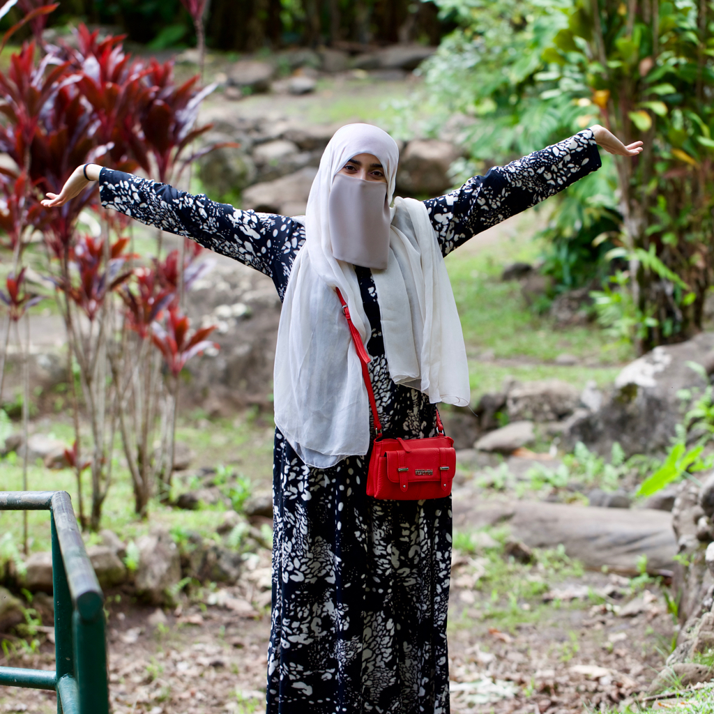

About Me
I am a proficient research assistant with over five years experience in leading meaningful projects. My current work is in studying the significance of the genetics behind the physiology of hearing. My prolific achievement in research is evident by my involvement in various fields from biological development to environmental engineering to clinical research.
Through my diverse projects, I have garnered skills as meticulous as animal care and husbandry and as deft as live animal surgery. It is my purpose to transform every project that I work on to become a complete success.
In addition to my involvement in research, I am a writer, a creator, and a teacher. My current project is developing a travel blog through which I teach others how to personalize their perfect trip. As I design and develop this travel blog, I progress my knowledge and skills in web design, web development, and photography.